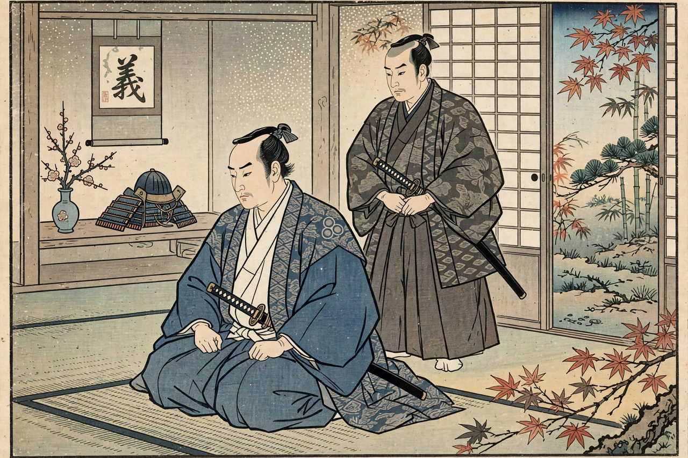

Ritual suicide
Ritual suicide is the act of deliberately killing oneself according to a prescribed religious, cultural or military rite, rather than as a private response to despair. It is distinguished from other forms of suicide by its formal, rule-bound and often public character, and by the honour or meaning the rite confers.

Historical forms
- Seppuku (Japan) — ritual disembowelment practised by samurai to restore honour or avoid capture; often performed with a second (kaishakunin) to complete the act.
- Sati (South Asia) — the now-outlawed practice of a widow immolating herself on her husband's funeral pyre.
- Jauhar (Rajput India) — mass self-immolation by women and children to avoid capture and enslavement during sieges.
- Roman mors voluntaria — fallen Stoic and senatorial figures, such as Seneca and Cato the Younger, choosing death over dishonour.
- Devotio (ancient Rome) — a general's self-sacrifice vowed to the gods in battle.
Modern contexts
In modern discussion the term is sometimes extended to culturally sanctioned practices such as honour suicide and, controversially, to suicide attacks carried out under religious or ideological sanction — though scholars debate whether the latter belong in the same category. The ethics and psychology of ritual suicide are distinct from those of suicide motivated by mental illness, and most modern states criminalise or prohibit surviving traditional forms.